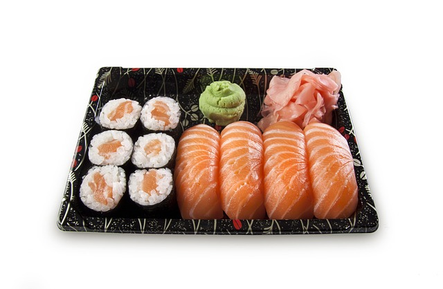

SUSHI FAN · TANDIL
La carta.
Un plato para cada plan. Explorá, elegí y armá tu próxima tablita.
Descubrir los platosDELIVERY & TAKE AWAY
Encontrá tu
próximo favorito.
Elegí tus productos, revisá el carrito y completá tus datos. WhatsApp abre el mensaje listo para revisar y enviar.
DEMO INTERACTIVA Productos, fotos y precios ilustrativos. Probá el recorrido completo sin enviar un pedido real.
- 01 Elegí en la carta
- 02 Revisá el carrito
- 03 Completá tus datos
- 04 Enviá por WhatsApp

CARTA EN PREPARACIÓN
Tu próximo favorito está en camino.
Estamos cargando los productos y precios vigentes de delivery. Mientras tanto, podés consultar al local.
Consultar al local ↗
TU PRÓXIMA TABLITA
¿Ya elegiste
tus favoritos?
Revisá tu selección y prepará el mensaje en un solo paso.